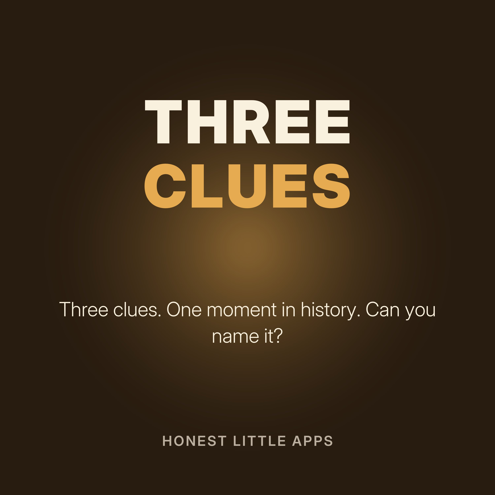

Three Clues: A History Mystery Minute
Short history puzzles. You hear three clues, each one more specific, then you get a moment to guess before the answer. Good for car rides, classrooms and trivia lovers.
Made by Honest Little Apps, the makers of PastRush: History Detective, an iPhone history game where you solve real moments from the past with clues. Narrated with a synthetic (text-to-speech) voice.
- Case oneClue one. It happened in the summer of 1969.
- Case twoClue one. It was a great wall, but not the one in China.
- Case threeClue one. It sailed in April 1912.
- Case fourClue one. It was signed in 1215.
- Case fiveClue one. It was a race that began in 1957.